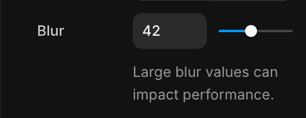

The Web Animation Performance Tier List
Learn what makes web animations fast, slow, and everything in between with our 2025 web animation performance tier list.
Animation performance is one of the topics I'm asked about the most. It makes sense - the whole reason we make animated UIs is so they feel smooth and responsive. If these animations don't perform well, they become actively harmful to the overall experience.
But performance can often feel like a dark art. It's a broad topic, extremely nuanced, and full of trade-offs.
In this article, I'm sharing everything I know about animation performance on the web. We'll cover it all - when to use will-change (and when to not), why CSS variables are bad actually, what hardware acceleration means - everything.
Yes, we're going to go into the technical details, and talk about these nuances and trade-offs. At the same time, we're going to categorise everything into an animation performance tier list, so you can easily remember which techniques to prefer, which to use with care, and which to avoid completely.
The render pipeline
Before we can get to ranking, we need to understand a little about the browser's render pipeline.
This is the process by which a browser takes all the HTML, CSS, fonts and images, and then turns them into the final image that you see on your screen.
Every browser is different in the specifics, but they all follow the same broad steps. First, it has to calculate the styles that will apply to each element.
Once it knows that, there are three render steps that run in the following order:
-
Layout: Calculate the geometry of all the elements. Where are they? How big are they? The answers are determined by rules like
width,position,displayetc. -
Paint: Decide which elements should be grouped into layers and draw their pixels. Changing values like
background-colorandcolorwill trigger paint. -
Composite: Take these separate images and merge them together. We can manipulate composited layers without triggering paint using values like
transformandfilter.
The important thing to know is that triggering one step triggers every subsequent step. In other words, if you trigger layout, you also need to paint and composite. Whereas if you trigger composite, you don't need to re-run the other steps.
The exact cost (in terms of time) of running each step is completely situational, and profiling this could (should?) be a post of its own. But triggering, for example paint, is always more expensive than triggering composite, because if you paint you also always need to composite.
Threads
Additionally, you need to know that most of these steps happen synchronously, one after the other, on the "main thread". This is a CPU process where most of your JavaScript and other browser work happens.
Therefore, if the main thread is busy, the render pipeline will be blocked from updating the screen, and this manifests as stuttery animations.
However, there's also the "compositor thread". If changing a style (like transform) only triggers the composite step, then it's often possible to run the animation itself on the compositor thread. In this case, if the main thread gets blocked, the animation will remain smooth.
Tiers
Now that we understand how the browser actually works, we can make some basic tiers to rank our animation techniques:
-
S-Tier: Animations that can be run entirely on the compositor thread.
-
A-Tier: Run on the main thread but trigger compositor.
-
B-Tier: Involve some DOM setup measurements, but then run as A or S-Tier animations.
-
C-Tier: Trigger paint.
-
D-Tier: Trigger layout.
-
F-Tier: You'll see!
There's a ton of caveats to the above - hence the rest of this post.
As discussed, the reason we want performant animations is to create smooth and responsive UIs. Therefore, an animation technique that performs well, but for some reason doesn't feel responsive? It'll get a downgrade.
We'll cover all this, and more. So let's get into it!
An S-Tier animation can run entirely on the compositor thread. Heavy main thread work won't affect an S-Tier animation - it'll stay a smooth 60 or 120fps.
Compositor styles
The styles generally capable of animating via the compositor are transform, opacity, filter, and clip-path.
Animating these values with either CSS, the Web Animations API (WAAPI), or an animation library that supports WAAPI (like Motion) will ensure your animations remain smooth, even when the main thread is busy.
animate(".box", { opacity: 1 })By contrast, JavaScript libraries based on requestAnimationFrame (like GSAP) can still update these same properties, but the animation itself runs on the main thread. This means the animation is interruptible - usually smooth, but vulnerable to jank whenever the main thread gets blocked.
Avoid style recalculations
Another key benefit of hardware-accelerated animations is that an element's visuals can update without recalculating styles.
Remember, this is a main thread process that runs before the browser decides whether it needs to trigger the layout, paint or composite steps.
The style recalculation itself can be extremely costly, especially in complex DOM structures, or on pages using slow CSS selectors.
Scroll animations
When animating one of these compositor values using a Scroll Timeline or View Timeline, whether that's via CSS, WAAPI, or Motion's scroll() function, these scroll animations will also be hardware accelerated.
scroll(
animate(element, { opacity: [0, 1] })
)However, there's another, perhaps bigger, reason these animations feel so great: Scrolling itself runs on the compositor thread.
Scrolling is arguably the most important interaction for keeping a UI feeling responsive, which is why browsers handle it away from the main thread.
This means if you're running a scroll animation by reading scrollTop, then your animation might appear to update a frame later than scroll, or even at a different framerate entirely. These types of scroll animations are an easy D-Tier.
In my experience this effect is much more obvious in Safari, and the primary reason it's historically been recommended to sync an element position to scroll by using position: sticky or fixed rather than updating a transform.
De-optimisations
Here's the interesting crinkle in hardware accelerated animations: To support them, browsers essentially have to maintain two separate animation engines, one for the CPU-bound main thread and one for the GPU compositor thread.
Here's the thing not many people know: The compositor animation engine doesn't have to be spec-complete. Because, if the user requests a feature that the compositor thread doesn't support, the browser can simply run it on the main thread, silently losing its hardware acceleration.
Safari is the biggest offender here. It doesn't (yet) have a dedicated compositor engine, instead re-using macOS's Core Animation framework. So if your animation calls for a feature that Core Animation doesn't support, like a playbackRate other than 1, then the animation is no longer hardware accelerated.
Likewise, some values might not be supported by the compositor engine. For example, Chrome only added support for %-based translate values long after adding accelerated animations.
Layer size
Another (quite literally) big performance caveat with S-Tier animations is that they always require the creation of a layer.
A layer is an element, or group of elements, painted together. Essentially, an image that the compositor can move, transform and fade independently, before grouping (or compositing) them all into one final image.
These images can become huge without you realising it. Desktop GPUs usually handle this well, but on mobile devices it's easy to blow out the GPU memory and crash a website.
A classic offender here is the ticker/marquee animation, where long lists of duplicated items scroll continuously. Each cloned element contributes to a giant layer, often spanning many times the viewport width. This is why the Motion+ Ticker uses a reprojection renderer to reduce or eliminate cloned elements in order to limit layer size. It's a deliberate trade-off, introducing the occasional paint in order to keep GPU memory under control.
A confounding factor here is blur. Yes, filter: blur() is hardware accelerated. But that doesn't make it free. The cost of a blur can escalate sharply with every increased pixel of blur radius, and with larger layers. The blur itself then makes the layer even larger, hitting memory further. This is why, long ago, I added a warning flag in Framer to flag blur values over 10px.

An A-Tier animation changes composited values (like transform or opacity), but it's driven from the main thread. Changing these values triggers composition alone, which means in ideal circumstances animations will perform excellently, but could be interrupted by other main thread work.
Layers only
For a style to trigger composition alone, the element it's being set on must first be promoted to a layer. If it isn't, updating values like transform and opacity will still trigger a paint.
Ultimately, the browser decides which elements will become a layer. The reasons will vary by browser, and they are numerous and mystical, including:
-
An associated CSS/WAAPI
transform(etc) animation -
A 3D
transform -
position: fixedorsticky -
backdrop-filter -
Overlapping another layer
You can also hint that an element should become a layer with will-change:
dialog {
will-change: transform, opacity;
}The MDN docs warn (with a massive red box) that will-change should be used sparingly. The core concern is that by creating too many layers or layers that are too big, we can blow out GPU memory budgets.
This is why Motion doesn't just spray will-change across every animating element. Layerisation is a tool that you should know about, and use knowingly.
JavaScript animations
Once an element is a layer, then changing a composited value via element.style will only trigger composition, skipping paint.
element.style.transform = "translateX(100px)"This is true of all classic JS animation libraries like GSAP, or custom requestAnimationFrame implementations. It's also how Motion animates independent transforms:
animate(element, { x: 100 })There is, of course, additional CPU overhead when running a JS animation (though this is also true of main thread CSS/WAAPI animations). In my experience though, JS runtime is almost never the reason for a slow animation, it is almost always a costly render.
In certain cases, like animating thousands of small elements, benchmarks show that requestAnimationFrame or GSAP will outperform hardware-accelerated animations.
Of course, if you're animating thousands of elements its probable you're better off using a shader.
Shaders
A shader is a small WebGL/WebGPU program that decides which colour to paint a pixel. Because they run massively in parallel, they can produce complex effects with incredible performance.
However, shader updates are still scheduled via requestAnimationFrame, which means timing is controlled by the main thread. That’s why shaders aren’t S-Tier: they can render incredibly fast, but they can still miss frames if the main thread is blocked.
IntersectionObserver
The IntersectionObserver is the most performant way to detect when an element enters or leaves the viewport. It's the secret sauce behind Motion's inView function and whileInView prop.
An observer efficiently tracks element visibility relative to the viewport in a background thread, without any scrollTop reads or other DOM measurements. So it adds minimal work to the main thread.
Because it's so lightweight, it's ideal for scroll-triggered animations:
inView(element, () => {
animate(element, { x: -100 })
})<motion.div whileInView={{ opacity: 1 }} />But IntersectionObserver has another, often overlooked superpower: Deactivating off-screen animations.
Imagine we have a long-running animation that would normally keep playing as long as the page was open:
.in-view {
animation: spin 2s infinite;
}By using IntersectionObserver, we can ensure that this animation is only playing when the element itself is within the visible area:
inView(element, () => {
element.classList.add("in-view")
return () => element.classList.remove("in-view")
}).in-view {
animation: spin 2s infinite;
}This is the way Motion+ Ticker ensures its long-running animations are performant and battery-friendly, by only running them while the ticker is visible.
A B-Tier animation is an A or S-Tier animation with an additional upfront cost: DOM measurements.
Layout animations
Motion has a powerful layout animation engine that allows the animation of an element's size and position, without triggering layout every frame.
<motion.div layout />It achieves this by only animating the transform style. So instead of animating an element between width: 500px and 1000px, it can animate an element of width: 1000px between scale(0.5) and 1.
The downside of animating scale vs width/height is it can distort elements. But Motion corrects for this every frame, by calculating inverse transforms and border-radius for an element and its children.
To achieve all this, it first has to do some setup measurements using what's known as the FLIP (First, Last, Invert, Play) technique.
Because of Motion's per-frame calculations that allow for scale correction (and a few other benefits), it performs this kind of animation on the main thread (A-Tier). But if we were doing this ourselves, just one element deep, it could easily become an S-Tier hardware accelerated animation.
animate(element, { transform: [delta, "none" ]})This one upfront measurement takes the most expensive kind of animation and makes it one of the least.
C-Tier animations trigger the paint step. This means they force the browser to recalculate styles and then redraw affected layers.
Painted values
There's plenty of (often out of date) lists out there that will tell you which styles trigger paint and layout. But an easier rule of thumb is to use your common sense: If a value changes geometry then it'll trigger layout (width, flex etc). But if we're only changing something like background-color, color, or border-radius, then this is something that can be handled by the paint step.
As we saw earlier, transform and opacity etc can also trigger paint when changed on a non-layer element.
It isn't a cut-and-dry fact that paint animations are inherently "bad", as long as you keep in mind that it's more expensive to paint bigger layers. Changing the color of a button is probably fine, animating the color of a whole page could get expensive on larger screens.
Beyond that, as we saw with filter: blur, not all operations are equal. Animating background-color is cheap compared to animating mask-image or background-image gradient, because with the latter we're having to draw a brand new gradient image too.
CSS variables
CSS variables are powerful, but also surprisingly bad for performance.
You can animate them with any JS animation library, and increasingly browsers are supporting @property, which lets you animate them with CSS or WAAPI too.
The first problem with CSS variables, and the reason they sit in C-Tier, is that changing one will always trigger paint on affected elements.
This is true even if an element is only using the variable within a compositor value like opacity:
div {
--progress: 0;
opacity: var(--progress);
}It's a quick way to downgrade otherwise performant animations.
The inheritance bomb
However, the major, F-Tier performance killer hidden within CSS variables is inheritance.
Many "clever" demos on the web will animate global CSS variables, which are then inherited by various elements within the tree.
html {
--progress: 0;
}
.box {
transform: translateY(calc(var(--progress) * 100px));
}The problem is that changing this value can invalidate styles across an entire tree, forcing the entire thing to recalculate. This is true even if var(—progress) is only used in a couple of places - or not used at all!
I recently found a site updating a global CSS variable every frame. It forced style recalculations on 1300+ elements, costing a whopping 8 ms per frame. This is the entire budget for a 120fps animation, just to decide which elements needed rendering.
Replacing this CSS variable with targeted JavaScript style updates reduced this cost to almost nothing. From 8ms to nanoseconds.
box.style.transform = `translateY(${progress * 100}px)`This pattern performs well in isolated CodeSandbox demos, where the DOM is tiny and CSS selectors are simple. But in production, with thousands of nodes and complex selectors, the cost of inherited variables is unpredictable. In the real world, this pattern can completely blow up your performance.
Improving CSS variable performance
It can still be safe to animate CSS variables. While I would never recommend them for values like transform, you can safely use them in styles like mask-image that would trigger paint anyway.
To avoid the inheritance bomb, you've got two options:
1. Reduce scope
Rather than setting the CSS variable globally, set it as close to the point of usage as possible. So instead of html, set it on a particular section.
2. Disable inheritance
Or, ideally, don't inherit at all. By using @property you can define the CSS variable to only affect the current element.
@property --progress {
syntax: "<number>";
inherits: false;
initial-value: 0;
}This prevents changes to the variable cascading through the DOM, eliminating the risk of recalculation wildfire.
Registering a variable does come with a one-time style recalculation, so better to batch multiple registrations at once.
Sometimes this isn't applicable, as your animation might rely on inheritance (though in this instance you're probably better off with targeted JS updates). But given that changes to even unused variables can become a huge problem, inherits: false is a safe default.
SVG attributes
By animating native SVG attributes like path data (d), circle position and radius (cx/cy/r) etc, the browser needs to repaint the shape every frame.
Sometimes this is unavoidable, for instance when making a "drawing"-style animation. But to move or resize SVG graphics, stick to transform where possible.
View Transitions
The View Transitions API lets you animate between two entirely different views.
By default, it screenshots the outgoing and incoming views and then crossfades them. This crossfade is performed with opacity via an S-Tier hardware accelerated animation.
Additionally, they can animate the size and position of elements with matching view-transition-name styles using transform (S-Tier) and width/height (D-Tier).
So why the C-Tier rank overall? Because of two extra factors at play: Interruption, and isolation.
Interruption
As we've established, the point of making animations perform well is to keep UIs responsive. Another key part of this is the ability to instantly interrupt an animation with a new one, starting from the current state. View Transitions can't do that.
You're forced to choose between waiting until the current animation has finished, or instantly finishing the current animation before starting the next one.
Either your UI is unresponsive, or visually broken.
In some situations, like full-screen page transitions, this is generally okay. But it's completely unsuitable for situations where interactive elements remain in place across both old and new view.
Motion's animateView attempts to improve this situation by queueing and batching interrupting View Transitions. Soon, it will also subtly "fast forward" active animations when interrupted. But these techniques are still a patch rather than a fix.
Isolation
On the plus side, View Transitions are smart about containing the cost of triggering layout. This touches on something we'll explore next, but essentially not all layouts are created equal.
Each matching view-transition-name element pair is represented by a single ::view-transition-group element. This element contains just two other elements, each a snapshot of the old and new elements.
This is a very simple DOM, with a layout isolated from surrounding elements using position: absolute. The calculations are cheap.
So while yes, this is by definition a D-Tier animation, it's about as good of a D-Tier animation as is possible and further evidence there's no hard and fast rules when it comes to web animation.
Further performance improvements
By default, a ::view-transition-group always animates its width and height, even when their size is identical.
View Transition wizard Bramus has figured out a technique to remove these keyframes, leaving only a hardware accelerated position animation, promoting the entire animation to S-Tier. In my opinion, this should be a spec-enshrined technique, but as a proof-of-concept it shows that this is at least possible in some situations.
A D-Tier animation is one where you're triggering the layout render step, and therefore the entire render pipeline every frame.
This can be a massive hit to your frame budget. Sometimes even high-end devices will drop frames here.
Layout
Changing an element's layout will recalculate the geometry of one or more elements.
Any change in layout can ripple throughout a page and a wide number of styles can affect layout, like width, margin, border, top, display, justify-content, grid-template-columns and more.
As we've seen, not all layout calculations are equal. Their cost scales with the size and complexity of the tree you're invalidating.
A layout change on a tiny, isolated component with no children will be very cheap. Animating the width of a top-level container, surrounded by siblings, containing hundreds of children all with reflowing text - it'll cost ya.
Reduce the cost of layout
The browser is already quite intelligent about scoping layout recalculations. For instance, changes to the size and position of a position: absolute or position: fixed element aren't going to trigger the recalculation of surrounding elements, as their layouts are isolated.
You can also manually tell the browser that a layout is contained by using the contain CSS rule. This tells the browser that changes to layout within an element aren't going to affect the layouts of surrounding elements.
The F-Tier is the cardinal sin of web animations. I didn't even bother with an E-Tier - this is the one to avoid. An instant fail.
Thrashing
Style and layout thrashing is the process of writing to the DOM, measuring it, writing, measuring and so on.
For example, if we set an element's dimensions:
element.style.width = "100px"Then read them back:
const width = element.offsetWidthThen set them again:
element.style.width = width * 2 + "px"And so on - this is thrashing.
Or a more real-world use-case:
const header = useRef()
useLayoutEffect(() => {
const element = header.current
// Read
if (element.scrollWidth > element.clientWidth) {
// Write
header.current.dataset.overflowing = "yes";
} else {
header.current.dataset.overflowing = "";
}
}, [text]);
return <div ref={header}>...</div>With just one instance of this component, but if you start rendering many versions of this component then you're in serious thrashing territory.
This has a massive negative effect on performance and is easily introduced to a site by mixing various different libraries that are each reading and writing from the DOM.
It's not always obvious when you're reading from the DOM. For instance, take this Motion animation:
animate(element, { width: "auto" })How does Motion know what auto is? Typically, JS animation libraries will resolve keyframes like this immediately, often involving a read/write.
But instead, Motion uses a WAAPI-inspired process called deferred keyframe resolution to ensure that all these reads and writes are batched, and this batching is why Motion is 2.5x faster than GSAP at animating from unknown values, and 6x faster at unit conversion.
Motion batches all reads and writes every animation frame, and offers this as a low-level API called frame. This ensures that other library authors and developers can avoid stepping on each other's toes and inadvertently introducing thrashing.
let width = 0
frame.read(() => {
width = element.offsetWidth
frame.update(() => {
element.style.width = width * 2 + "px"
})
})Conclusion
Performance isn't a dark art. But it is an art. Understanding how the render pipeline works gives you the instincts to know why an animation might be janky, and what to reach for instead.
There's no hard rules. Every choice - memory, layers, hardware acceleration etc - has intersecting tradeoffs. Although in my experience 90% of performance issues are just a big filter: blur, hopefully you're now better equipped to deal with the remaining 10%.
At almost 4000 words this post turned out longer than I expected, yet I still feel like I'm missing some things, or didn't go deep enough on others. Is there anything still stumping you? Or perhaps you want a post exploring one of the topics above in greater detail? Let me know!
PS: Many thanks to Jacob and Ivan from Framer for proof-reading and fact-checking this post!